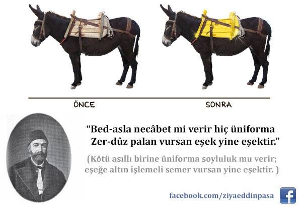

 Bed-asla necâbet mi verir hiç üniforma? Zer-dûz pâlân ursan eşek yine eşekdir.
sadeleştiren ve akt. Yeni Türk Edebiyatı Antolojisi II, S. 20-21 İstanbul Üniversitesi Edebiyat Fakültesi Yayınları
EnglishHow could a uniform make a base fellow noble? Put a gold-lined saddle on him, the ass is still an ass. Ziya Pasha (Abdulhamit Ziyauddin 1825 or 1829 - Adana ) was an Ottoman Turkish writer translator, administrator, notorious for his scourging satirisms against beurocracy at the collapse of the Pax Ottomana. His symbolic poetry reflects the nepostic corruption of the political affiliations and the lack of meritocracy in civil office appointments or promotions in his contemporary age. The metaphor of donkey for example might explain an indirect attempt to criticize the related authority or regime or the unfortunate disorder of governance in the form of an auto-censored precaution and the reason why it was received in turn as a credible account of unofficial history, revealing the acclaim of generations and the colossal motive for its rendition as a classical divan masterpiece branching out for in modern Arabic literature, as well. The poem above is from his the 9th series of Terkib-i Bend (stanzaic poems) ref. HUMANITIES INSTITUTE TURKIC LITERATURE – 19th Century Prof. Talat S Halman PART I : OVERVIEW : Occidental Orientation İstanbul Üniversitesi Edebiyat Fakültesi YayınlarıTurkish
Bed-asla necâbet mi verir hiç üniforma?
Zer-dûz pâlân ursan eşek yine eşekdir.
Özü kötü olan insanlara hiç giydiği üniforma [makam, yetki] soyluluk verir mi?
Altından yapılmış semer vursan eşek yine eşektir.
akt. Yeni Türk Edebiyatı Antolojisi II, S. 20-21,
İstanbul Üniversitesi Edebiyat Fakültesi Yayınları
Arabic
لأن الخيل قد قلّت
, تحلت حمير الحي بالسرج الأنيق
اذا ظهر الحمار بزي خيل
تكشف أمره عند النهيق
لأن because
الخيل the horse
قد has
قلّت become rare
, تحلت dressed up sharply
حمير الحي the asses of the hood
ب with
السرج saddles
الأنيقnice
اذا when
ظهر appear
الحمار the donkeys
بزي خيل in horse cloth
تكشفwill be exposed
أمره their reality
عند at
النهيق the neighing
For the horse has become rare, the asses of the hood have dressed up sharply
wıth saddles so nice - dandy.
and when they appear in such horse clothing,
their reality will be exposed at their neighing
Syrian Poet: Fadıl Asfar (b. 1970)
ref. فضح القبائح exposition of malices, a tribute to Poet Fadil Asfar by Poet Ahmad Urfali